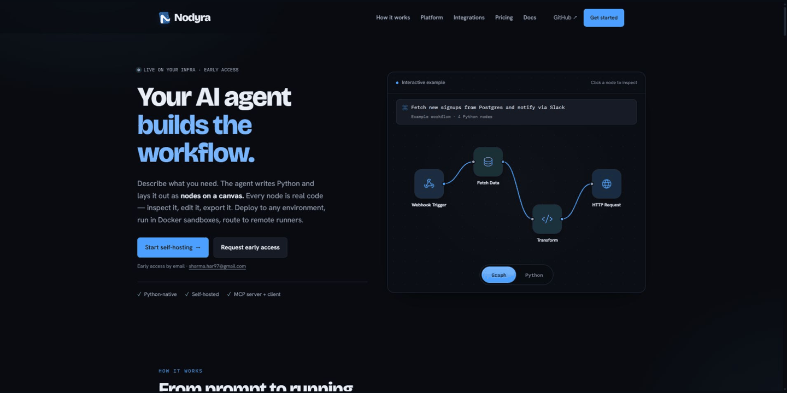

Install Nodyra on your own infrastructure, build Python workflows, and inspect every run. Start with the 1.0.5 self-hosted beta for a single Docker host and trusted workflow authors. There is no hosted Nodyra service.
Install the current release
- Download 1.0.5
and verify the source archive with the attached
SHA256SUMS. - Follow the single-host installation guide to configure secrets, build the containers, and create your owner account.
- Run the first workflow and download its verified artifacts.
The release builds images locally. See release verification for the tested scope, evidence, and limits. Configure HTTPS and backups before allowing access from other machines.
See Nodyra in action

The tour shows a real local workflow execution. The latest release also improves the input/output header layout shown in the recording.
Start here
- Getting started — run Nodyra and complete a first credential-free workflow.
- Architecture chooser — choose a topology based on trust, scale, and reliability requirements.
- MCP quickstart — connect an MCP client and build visible, editable workflows.
- Migration — generate compatibility reports before importing existing automation.
- Licensing — understand permitted self-hosting and commercial use.
Build workflows
- Writing nodes — the
@nodedecorator, uploaded modules, credentials, artifacts, typed values, and tests. - Working with datasets — artifact-backed DatasetRef handles, records conversion, and DuckDB SQL.
- Workflow templates — template metadata, versioning, verification, and compatibility.
- Recipes — API, dataset, alerting, and CI examples.
- Nodyra Academy — credential-free exercises using the loopback practice API.
- Export modes — export a workflow to Python or a Docker bundle.
- GitOps — synchronize workflow definitions with GitHub.
- MCP reference — MCP transport, authentication, and tools.
- Proof-point demos — Python-native and MCP-native smoke demos.
Operate Nodyra
- Operations guide — install, configure, scale, secure, observe, back up, upgrade, and troubleshoot production deployments.
- Deployment — local development, Compose, Helm, configuration, and production checks.
- Backup, restore, and upgrades.
- Security policy — execution trust boundaries, operator responsibilities, and vulnerability reporting.
- Workers and scaling.
- Disposable evaluation profile.
- Soak testing.
- Rename migration — update deployments and clients created before the project rename.
Extend Nodyra
- Integration development — provider operations, triggers, credentials, dynamic options, transport, and tests.
- Provider coverage — official provider operation and trigger coverage.
- Community nodes — install and publish node packages.
- Python accelerators — optional interpreter and compilation modes for workflow environments.
Architecture and project policy
- Architecture — components, execution model, persistence, and security boundaries.
- Architecture decision records.
- Status matrix — shipped, beta, experimental, scaffolded, and planned capabilities.
- Continuous integration.
- Release and support policy.
- Contributing, CLA, Code of Conduct, and Trademark policy.